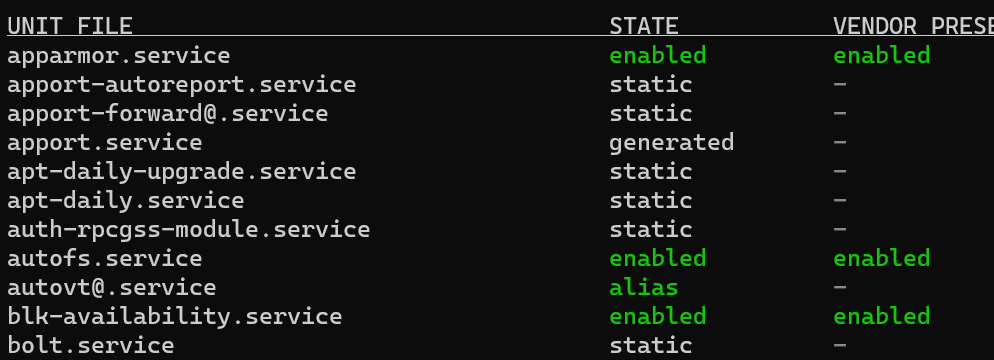
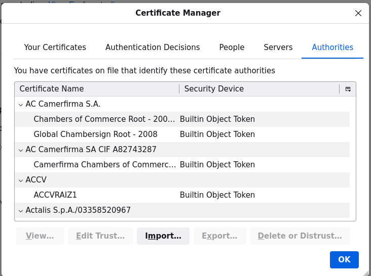
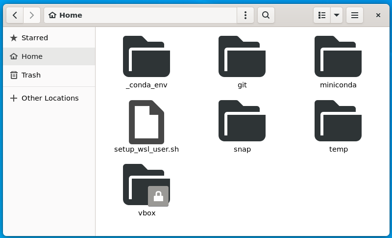
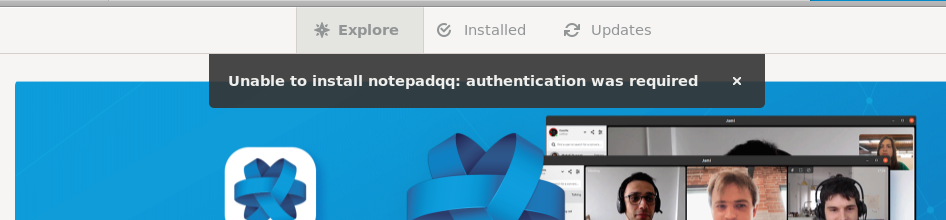
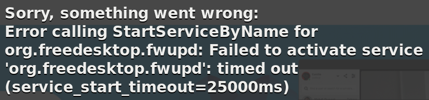
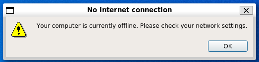
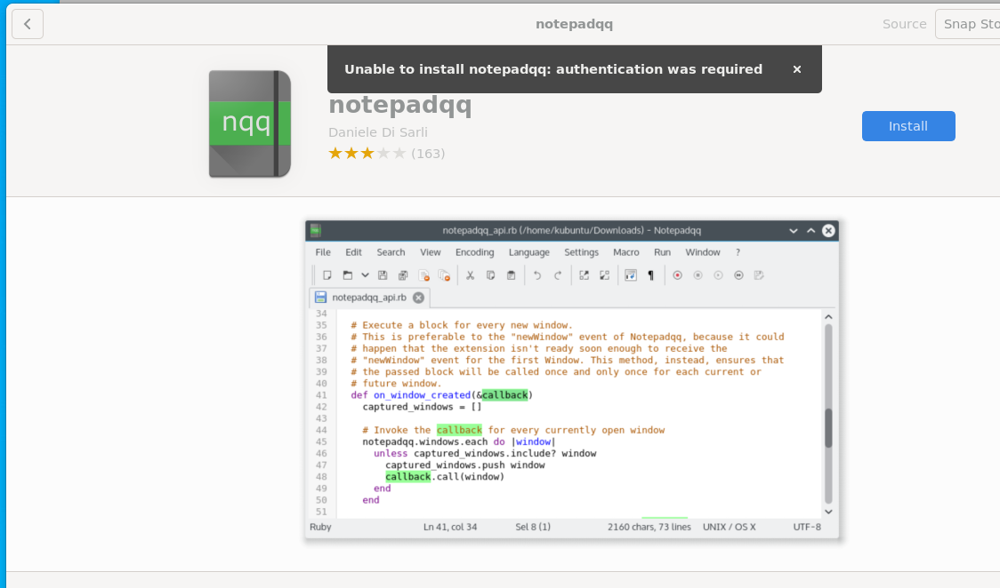

Source of inspiration
From devblogs: The Windows Subsystem for Linux in the Microsoft Store is now generally available on Windows 10 and 11
What’s new in the Store version of WSL?
There are 100s of bug fixes and improvements that you can read through on our release notes page to see all the improvements that we’ve put into the Store version of WSL. In this blog post I’ll highlight some of the significant changes that you might see as a user upgrading to the Store version for the first time.
- You can opt in for systemd support
- Windows 10 users can now use Linux GUI apps! This was previously only available to Windows 11 users
wsl --installnow includes:- Direct installation from the Microsoft Store by default
--no-launchoption to not launch the distro after installing--web-downloadoption which will download the distro through our GitHub releases page rather than through the Microsoft Store
wsl --mountnow includes:--vhdoption to make mounting VHD files easier--nameoption to make naming the mountpoint easier
wsl --importandwsl --exportnow include:--vhdoption to import or export to a VHD directly
- Added
wsl --import-in-placeto take an existing .vhdx file and register it as a distro - Added
wsl --versionto print your version information more easily wsl --updatenow includes:- Opening the Microsoft Store page by default
--web-downloadoption to allow updates from our GitHub release page
- Better error printing
- All of WSLg and the WSL kernel are packaged into the same WSL package, meaning no more extra MSI installs!
Testing these features
systemd
following this article: systemd support
Modify /etc/wsl.conf with
[boot]
systemd=trueAnd restart wsl image (wsl -t ubuntu-22.04)
Test that it works by running
systemctl list-unit-files --type=service
I can now use systemctl to manage services such as
sudo systemctl restart autofs.servicesnapd
Upgrade snap
sudo apt-get -y upgrade snapdCheck it is running
$ snap list
Name Version Rev Tracking Publisher Notes
core20 20220318 1405 latest/stable canonical✓ base
lxd 5.0.0-b0287c1 22923 5.0/stable/… canonical✓ -
snapd 2.55.3 15534 latest/stable canonical✓ snapdfirefox
And install firefox
sudo snap install firefox
# due to a bug when opening settings
# https://answers.launchpad.net/ubuntu/+question/701403https://answers.launchpad.net/ubuntu/+question/701403
sudo apt install xdg-desktop-portal-gtksudo apt install xdg-desktop-portal-gtk
To allow external websites, import this certificate /usr/local/share/ca-certificates/cert_M_X5C_sase-mob-sslfwd-trust-ca.crt in the certificate manager

nautilus
And install nautilus
sudo apt install nautilus nautilus-extension-gnome-terminal
gimp
And install gimp
sudo apt install gimpZettlr (markdown editor)
Now that typora is not open sourced anymore, switch to Zettlr
wget https://github.com/Zettlr/Zettlr/releases/download/v2.3.0/Zettlr-2.3.0-amd64.deb
sudo apt-get install libxss1
sudo dpkg -i Zettlr-2.3.0-amd64.deb
Zettlrsnap-store
I can install like for other softwares
sudo snap install snap-store
# to fix "Unable to download updates, you do not have permission to install software"
sudo apt install --reinstall policykit-1-gnome
sudo apt install --reinstall gnome-software
# to fix "Unable to install <e.g. notepadqq>: authentication was required"
sudo snap remove snap-store
rm -rf ~/snap/snap-store
sudo snap install snap-store
snap run snap-storebut it failed at installing anything

investigations
Org.freedesktop.fwupd: Timeout was reached

This is the trace when starting snap-store
12:54:21:0924 Gs plugin fwupd took 25.0 seconds to do setup
12:54:47:0573 Gs can't reliably fixup error code 20 in domain g-dbus-error-quark
12:54:47:0574 Gs can't reliably fixup error code 20 in domain g-dbus-error-quark
12:54:47:0574 Gs not handling error failed for action refresh: Error calling StartServiceByName for org.freedesktop.fwupd: Failed to activate service 'org.freedesktop.fwupd': timed out (service_start_timeout=25000ms)
12:54:47:0574 Gs not handling error failed for action get-updates-historical: Error calling StartServiceByName for org.freedesktop.fwupd: Failed to activate service 'org.freedesktop.fwupd': timed out (service_start_timeout=25000ms)
12:54:47:0622 Gs not handling error no-security for action refresh: Failed to obtain authentication.
12:54:47:0671 Gs adding wildcard app */*/*/org.gnome.Builder.desktop/* to plugin cache
12:54:47:0671 Gs adding wildcard app */*/*/org.gnome.Calculator.desktop/* to plugin cache
12:54:47:0671 Gs adding wildcard app */*/*/org.gnome.clocks.desktop/* to plugin cache
12:54:47:0671 Gs adding wildcard app */*/*/org.gnome.Dictionary.desktop/* to plugin cache
12:54:47:0671 Gs adding wildcard app */*/*/org.gnome.Documents.desktop/* to plugin cache
12:54:47:0671 Gs adding wildcard app */*/*/org.gnome.Evince/* to plugin cache
12:54:47:0671 Gs adding wildcard app */*/*/org.gnome.gedit.desktop/* to plugin cache
12:54:47:0671 Gs adding wildcard app */*/*/org.gnome.Maps.desktop/* to plugin cache
12:54:47:0671 Gs adding wildcard app */*/*/org.gnome.Weather/* to plugin cache
12:54:47:0677 Gs Only 0 apps for recent list, hiding
12:55:13:0039 Gs can't reliably fixup error code 20 in domain g-dbus-error-quarksudo systemctl status fwupd.service
○ fwupd.service - Firmware update daemon
Loaded: loaded (/lib/systemd/system/fwupd.service; static)
Active: inactive (dead)
Docs: https://fwupd.org/
Dec 20 09:05:50 L001LPF3RKAR5 systemd[1]: Condition check resulted in Firmware update daemon being skipped.
Dec 20 09:06:16 L001LPF3RKAR5 systemd[1]: Condition check resulted in Firmware update daemon being skipped.
Dec 20 09:06:44 L001LPF3RKAR5 systemd[1]: Condition check resulted in Firmware update daemon being skipped.
Dec 20 12:11:54 L001LPF3RKAR5 systemd[1]: Condition check resulted in Firmware update daemon being skipped.
Dec 20 12:12:20 L001LPF3RKAR5 systemd[1]: Condition check resulted in Firmware update daemon being skipped.
Dec 20 12:12:45 L001LPF3RKAR5 systemd[1]: Condition check resulted in Firmware update daemon being skipped.
Dec 20 13:53:56 L001LPF3RKAR5 systemd[1]: Condition check resulted in Firmware update daemon being skipped.
Dec 20 13:54:22 L001LPF3RKAR5 systemd[1]: Condition check resulted in Firmware update daemon being skipped.
Dec 20 13:54:48 L001LPF3RKAR5 systemd[1]: Condition check resulted in Firmware update daemon being skipped.
Dec 20 14:00:02 L001LPF3RKAR5 systemd[1]: Condition check resulted in Firmware update daemon being skipped.dropbox
This one is the official one but it fails
sudo apt install nautilus-dropbox
dropbox start -ianother one
rm -rf ~/.dropbox-dist ~/.dropbox
wget -q -O ~/dropbox https://www.dropbox.com/download?dl=packages/dropbox.py
chmod a+x ~/dropbox
DISPLAY='' dropbox start -ibut still no luck

Desktop
Woulld like to test https://askubuntu.com/questions/1442663/cannot-start-gnome-session-after-enabling-systemd-on-latest-wsl2:
There 2 ways: - configure and access from XRDP - direct configuration
Will try on a fresh new image
rc.local
It would allow services to be created and run at boot time: https://www.cyberciti.biz/faq/how-to-enable-rc-local-shell-script-on-systemd-while-booting-linux-system/
not tested yet.
Problems
[FIXED] ERROR: CreateProcessParseCommon
When starting image after wsl update, I have the following error:
<3>WSL (8) ERROR: CreateProcessParseCommon:782: Failed to translate \\wsl.localhost\ubuntu-22.04\home\guillaumeI am not the only one, I have posted in this issue from WSL github repo.
A solution given in the thread is to update the way to call vpnkit (in .profile)
wsl.exe -d wsl-vpnkit --cd /app service wsl-vpnkit status >/dev/null || wsl.exe -d wsl-vpnkit --cd /app service wsl-vpnkit startCannot install from snap-store

14:12:09:0637 Gs not handling error no-security for action refresh: Failed to obtain authentication.
14:12:09:0638 Gs not handling error not-supported for action get-updates-historical: The name org.freedesktop.fwupd was not provided by any .service files